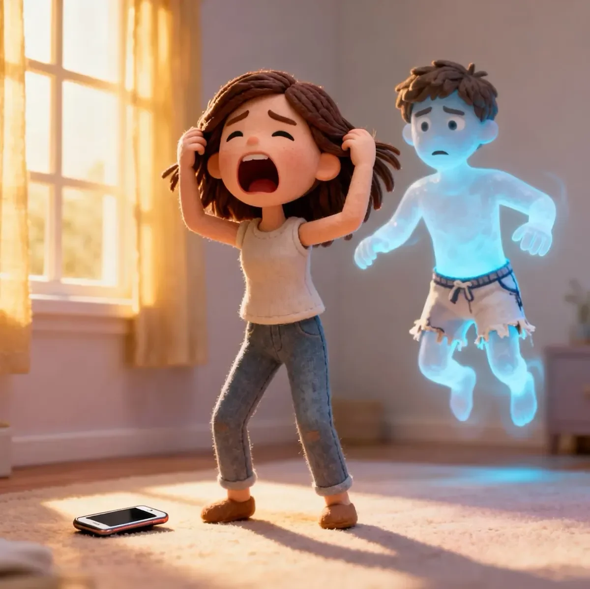

나오미 윈터스는 테오의 시내 로프트에서 바닥부터 천장까지 이어진 창문으로 스며드는 부드러운 일요일 아침 햇살에 눈을 떴다. 아래로 보이는 도시는 유난히 고요했고, 마치 세상이 오직 그들만을 위해 멈춘 듯했다. 밤새 테오의 품에 안겨 있던 그녀는 그의 가슴에 더 가까이 파고들었다. 평소 자신을 다시 잠들게 해주는 익숙한 박동 소리를 들으려 그의 살갗에 귀를 댔다.
[Naomi Winters woke to the soft glow of Sunday morning light filtering through the floor-to-ceiling windows of Theo's downtown loft. The city below was unusually quiet, as if the world had paused just for them. After spending the night wrapped in Theo's arms, she nestled closer to his chest, her ear pressed against his skin, listening for the familiar rhythm that usually lulled her back to sleep.]
아무 소리도 없었다.
[Nothing.]
그녀는 혹시 귀를 잘못 댔나 싶어 자세를 고쳐 잡았다. 여전히 아무 소리도 없었다. 부드러운 쿵쿵 소리도, 안심을 주던 생명의 고동 소리도.
[She adjusted her position, thinking perhaps she'd misplaced her ear. Still nothing. No gentle thump-thump, no reassuring percussion of life.]
"테오?" 그녀는 속삭이며 고개를 들어 그의 얼굴을 보았다. 그의 눈은 감겨 있었고, 표정은 평화로웠다. "테오?" 이번에는 좀 더 큰 소리로 부르며 그의 어깨를 찔렀다.
["Theo?" she whispered, raising her head to look at his face. His eyes were closed, expression peaceful. "Theo?" Louder this time, she poked his shoulder.]
아무런 반응이 없었다.
[No response.]
허둥지둥 상체를 일으키는 순간, 공포가 온몸을 덮쳤다. "테오!" 그녀는 떨리는 손으로 그를 거세게 흔들었다. 그녀의 손길에 그의 몸은 힘없이 흔들렸고, 고개는 한쪽으로 꺾였다. 그의 피부는 정상보다 차가웠지만 아직 냉기가 돌지는 않았다. 마치 일이 벌어진 지 얼마 되지 않은 것처럼.
[Panic surged through her veins as she scrambled to a sitting position. "THEO!" She shook him violently, her hands trembling. His body moved limply under her touch, head lolling to one side. His skin felt cooler than it should, but not cold—as if whatever had happened was very recent.]
"세상에, 맙소사, 맙소사," 그녀는 주문처럼 되뇌며 허둥지둥 휴대폰을 더듬어 찾았다. 갑자기 말을 듣지 않는 손가락으로 힘겹게 911을 눌렀다.
["Oh my god, oh my god, oh my god," she chanted, fumbling for her phone. Her fingers, suddenly clumsy appendages, struggled to dial 911.]
시야 끝으로 무언가 움직이는 것이 스쳤다. 그림자인가 싶더니, 침실 문가에서 어떤 형체가 나타나고 있었다.
[A flicker of movement caught her peripheral vision. A shadow, then a shape forming near the bedroom doorway.]
"무슨 소란이야?" 등 뒤에서 테오의 목소리가 들려왔다.
["What's all the commotion about?" Theo's voice came from behind her.]
나오미는 비명을 지르며 휴대폰을 떨어뜨리고 홱 돌아섰다. 거기에는 복서 팬티 차림의 테오가 서 있었다. 완벽히 살아있는 모습에 어리둥절한 표정이었지만, 어딘가 실체가 없는 듯 아침 햇살이 그의 몸을 희미하게 투과하는 것 같았다.
[Naomi screamed, dropping her phone and whirling around. There stood Theo, wearing nothing but boxers, looking perfectly alive and confused—yet somehow less substantial, as if the morning light passed partially through him.]
그녀는 다시 침대로 고개를 돌렸다. 테오의 몸은 여전히 그곳에 미동도 없이 누워 있었다.
[She turned back to the bed. Theo's body still lay there, unmoving.]
"내가 미쳐가는 건가?" 그녀는 두 손바닥으로 눈을 꾹 누르며 속삭였다.
["Am I having a stroke?" she whispered, pressing her palms against her eyes.]
"나오미, 우리 얘기 좀 해야 할 것 같아." 유령 테오가 부드럽게 말했다.
["Naomi, I think we need to talk," Ghost-Theo said gently.]
"얘기 좀 해야 할 것 같다고?" 그녀는 비명을 지르듯 소리치며 벽에 부딪힐 때까지 뒷걸음질 쳤다. "네가 둘이나 있잖아! 한 명은 죽었고! 나 지금 제정신이 아니라고!"
["YOU THINK?" she shrieked, backing away until she hit the wall. "There are two of you! One's dead! I'm losing my mind!"]
"정확히 죽은 건 아니야." 그가 머리를 긁적이며 말했다. "음, 엄밀히 말하면 죽었지. 근데 또 아니기도 하고. 복잡해."
["I'm not exactly dead," he said, scratching his head. "Well, technically I am. But also not. It's complicated."]
"복잡하다고?" 그녀의 목소리는 스스로도 가능할 줄 몰랐던 고음으로 치솟았다. "네 심장이 안 뛰잖아! 그건 복잡한 게 아니라 그냥 죽은 거라고!"
["Complicated?" Her voice reached a pitch she didn't know was possible. "Your heart isn't beating! That's not complicated, that's DEAD!"]
"그게 말이지..." 그가 침대에 있는 자신의 몸을 애매하게 가리켰다. "어젯밤 언젠가 그렇게 된 모양이야. 나도 몰랐어. 침대에 누워있는 내 모습을 보면서, 동시에 여기에 서 있는 나를 깨닫기 전까지는."
["About that..." He gestured vaguely toward his body on the bed. "That happened sometime last night. I just... didn't realize until I became aware of myself standing here while also seeing myself still in bed."]
나오미는 벽에 기댄 채 그대로 주저앉았다. "이건 현실이 아니야."
[Naomi slid down the wall until she sat on the floor. "This isn't happening."]
"사실, 이거 정말 흥미로워." 유령 테오는 그 익숙한 철학적 흥분감으로 눈을 빛내며 말을 이었다. "아무래도 내가 의식-신체 분리 현상을 경험한 것 같아. 내 육체는 기능을 멈췄지만, 내 의식은 살아있을 때의 내 모습을 닮은 현현체로 지속되고 있는 거지. 플라톤이었다면 정말 좋아했을걸. 그의 이데아론에 대한 완벽한 증거잖아."
["It's fascinating, actually," Ghost-Theo continued, his eyes lighting up with that familiar philosophical excitement. "I appear to have experienced a consciousness-body separation event. My physical form has ceased functioning, but my consciousness persists in a manifestation that resembles my living self. Plato would have a field day with this, perfect evidence for his theory of forms."]
"자기 죽음을 가지고 테드 강연이라도 하는 거야?" 나오미가 히스테릭하게 웃었다. "진짜 테오답네."
["You're giving a TED Talk about your own death?" Naomi laughed hysterically. "Classic Theo."]
"이게 충격적이라는 건 알지만—"
["I know this is distressing—"]
"충격적이라고? 난 시체를 껴안고 있었다고!"
["Distressing? I was CUDDLING A CORPSE!"]
유령 테오가 얼굴을 찡그렸다. "그렇게 말하니까 좀 그렇네..."
[Ghost-Theo winced. "When you put it that way..."]
"누군가한테 전화해야 해. 경찰. 의사. 퇴마사. 아무나!"
["We need to call someone. The police. A doctor. An exorcist. Someone!"]
"사실 말이야," 유령 테오가 그녀 맞은편 바닥에 아빠다리를 하고 앉으며 말했다. "이 점에 대해 계속 생각해 봤어. 죽음이 끝이 아니라 일종의 전환이라면 어떨까? 난 의식이 육체와 독립적으로 존재할 수 있다고 늘 주장해왔잖아. 데카르트의 심신 이원론이 어느 정도는 맞았던 거지. 물론 그조차도 이렇게 문자 그대로 해석될 줄은 상상 못 했겠지만."
["Actually," Ghost-Theo said, sitting cross-legged on the floor across from her, "I've been thinking about this. What if death isn't an ending but a transition? I always theorized consciousness might exist independently of physical form. Descartes was onto something with his mind-body dualism, though I doubt even he imagined such a literal interpretation."]
나오미는 그를 빤히 쳐다보았다. 첫 충격이 가라앉기 시작하면서 호흡이 점차 안정되었다. "지금 이 와중에 진지하게 철학 강의를 하는 거야?"
[Naomi stared at him, her breathing gradually slowing as the initial shock began to subside. "You're seriously philosophizing right now?"]
"원래 내가 하는 일이잖아." 그가 어깨를 으쓱했다. "아니, 했었던 일인가? 하는 일인가? 이런 상황이 되니 문법이 복잡해지는군."
["It's what I do," he shrugged. "Did. Do? Grammar becomes complicated in this situation."]
모든 상황에도 불구하고, 나오미는 웃음이 터져 나오는 것을 느꼈다. "죽어서까지 올바른 시제를 써야 할지 고민하는 사람은 너밖에 없을 거야."
[Despite everything, Naomi felt laughter bubbling up. "Only you would die and then debate the proper tense to use."]
"거봐, 이제 이해하네." 그가 웃었다. 나오미가 사랑에 빠졌던 바로 그 삐딱한 미소였다. "난 여전히 나야, 단지... 실체가 좀 부족할 뿐이지."
["See? You're getting it." He smiled, that crooked smile she'd fallen in love with. "I'm still me, just... less corporeal."]
"그럼 이제 어떡해? 남자친구 유령이랑 그 시체랑 같이 살아야 하는 거야? 새로 연애하기는 좀 곤란하겠네." 마지막 단어에서 그녀의 목소리가 갈라졌다. 유머는 다시 차오르는 공포를 감추기 위한 얇은 막에 불과했다.
["So what now? I just live with my boyfriend's ghost and his body? That's going to make dating awkward." Her voice cracked on the last word, the humor a thin veneer over rising panic.]
"연애?" 유령 테오가 상처받은 표정을 지었다. "벌써 다른 사람 만날 생각을 하는 거야?"
["Dating?" Ghost-Theo looked wounded. "You're already thinking about dating?"]
"나 지금 충격받았다고! 내가 무슨 말을 하는지도 모르겠어!" 그녀는 좌절감에 그에게 베개를 던졌다. 베개는 그의 가슴을 그대로 통과해 창문에 부딪히며 쿵, 하고 부드러운 소리를 냈다. 나오미의 눈이 휘둥그레졌다. "세상에, 너 진짜 유령이구나."
["I'm in shock! I don't know what I'm saying!" She threw a pillow at him in frustration. It sailed straight through his chest and hit the window with a soft thud. Naomi's eyes widened. "Oh my god, you really are a ghost."]
"흥미롭군." 그가 자신의 투명한 손을 살펴보며 중얼거렸다. "내 자신에게는 실체가 있는 것처럼 보이는데, 물리적인 물체에는 그렇지 않나 봐. 이건 인식과 현실의 본질에 대한 질문을 제기하는군. 만약 내가 나 자신을 실체로 인식한다면, 우리가 아직 이해하지 못하는 어떤 차원에서는 내가 실체인 걸까?"
["Fascinating," he murmured, examining his transparent hands. "I appear solid to myself but not to physical objects. This raises questions about the nature of perception and reality. If I perceive myself as solid, am I solid in some dimension we don't yet understand?"]
나오미는 유령 테오와 침대에 누운 테오를 번갈아 보았다. 그녀의 눈에는 눈물이 그렁그렁했다. 이 말도 안 되는 상황이 갑자기 온몸으로 느껴지자, 그녀는 걷잡을 수 없는 킥킥거림에 무너져 내렸다. 그 웃음은 금세 흐느낌으로 변했다가, 다시 웃음으로 돌아왔다. "미쳤어. 내가 세상에서 제일 철학적인 유령이랑 사랑에 빠졌다니."
[Naomi looked between Ghost-Theo and Bed-Theo, tears welling in her eyes. The absurdity of the situation suddenly hit her full force, and she collapsed into uncontrollable giggles that quickly transformed into sobs, then back to laughter. "This is insane. I'm in love with the most philosophical ghost in existence."]
"그럼 아직도 날 사랑하는 거야?" 그의 표정이 환해졌다.
["So you still love me?" His expression brightened.]
그녀는 눈물을 닦고 떨리는 숨을 내쉬었다. "당연하지, 이 바보야." 그녀가 한숨을 쉬었다. "우리 1년이나 사귀었잖아. 네가... 형이상학적이 됐다고 해서 사랑은 멈추진 않아."
[She wiped her eyes, taking a shaky breath. "Of course I do, you idiot," she sighed. "We've been together a year. I don't stop loving you just because you've become... metaphysical."]
"놀라울 정도로 잘 받아주네." 유령 테오가 부드럽게 말했다.
["That's remarkably accepting of you," Ghost-Theo said softly.]
"아, 이 일 끝나면 무조건 정신과 상담은 받아야 할 거야." 나오미가 대답했다. "하지만 우린 정말로... 너에 대해 뭔가 조치를 취해야 해." 그녀가 침대를 가리켰다.
["Oh, I'm definitely going to need therapy after this," Naomi replied. "But we really need to do something about... you." She pointed at the bed.]
"맞아." 유령 테오가 고개를 끄덕였다. "혹시 내 의식이 육체와 다시 통합될 수 있을지 궁금하긴 한데 만약—"
["Right," Ghost-Theo nodded. "Though I wonder if my consciousness could reintegrate with my physical form if—"]
"테오! 집중해! 죽은 몸이 먼저고, 형이상학 이론은 나중이야!"
["Theo! Focus! Dead body first, metaphysical theories later!"]
"사람은 죽어도 안 변한다더니."
["Some things never change, even in death."]
"그런가 봐." 나오미가 다시 휴대폰으로 손을 뻗으며 말했다. 그녀는 화면 위에서 손가락을 멈칫했다. "대체 뭐라고 말해야 하지? '여보세요, 제 남자친구가 죽었는데, 아직 여기 저랑 얘기하고 있어요'라고? 정신 병원에나 보내버릴걸."
["Apparently not," Naomi said, reaching for her phone again. She paused, her finger hovering over the screen. "What do I even tell them? 'Hello, my boyfriend's dead but he's still here talking to me'? They'll send me to a psychiatric ward."]
유령 테오가 더 가까이 떠다녔다. 말 그대로, 발이 바닥에서 살짝 뜬 채로. "그냥 내가 반응이 없다고 신고하는 건 어때? 형이상학적인 부분은 일단 우리 둘만의 비밀로 하고."
[Ghost-Theo floated closer, literally floated, his feet slightly above the floor. "Perhaps just report finding me unresponsive? The metaphysical aspects can remain between us for now."]
나오미가 천천히 고개를 끄덕였다. "이 일로 모든 게 바뀌겠지, 그렇지?"
[Naomi nodded slowly. "This is going to change everything, isn't it?"]
"변화는 삶의 유일한 불변의 진리지... 죽음에서도 마찬가지인 것 같지만." 유령 테오가 생각에 잠겨 말했다. "하지만 변하지 않는 것들도 있어. 난 여전히 널 사랑하고. 여전히 우주가 끝없이 매혹적이라고 생각하고. 그리고 여전히 파인애플 피자가 맛있다고 생각해."
["Change is the only constant in life... and apparently in death too," Ghost-Theo mused. "But some things remain. I still love you. I still find the universe endlessly fascinating. And I still think pineapple belongs on pizza."]
그녀의 입에서 웃음이 터져 나왔다. "죽어서까지 피자 토핑 취향은 틀려먹었네."
[A laugh escaped her lips. "Even in death, you're wrong about pizza toppings."]
"영원히 틀린 것 같네."
["Eternally wrong, it seems."]
나오미는 심호흡을 하고 911을 눌렀다. "하지만 이걸로 다음 주말에 우리 부모님 만나는 걸 피할 수 있을 거라 생각하면 오산이야. 죽었든 아니든, 약속했잖아."
[Naomi took a deep breath and dialed 911. "But if you think this gets you out of meeting my parents next weekend, you're wrong. Dead or not, you promised."]
"무슨 일이 있어도 가야지." 유령 테오가 대답했다. 그의 웃음소리가 조용한 로프트에 기묘하게 울려 퍼졌다. "물론, 유령 사위를 보고 어떤 반응을 보이실지 궁금하긴 하네. 어쩌면 이번 기회에 아버님께 물질적 소유라는 게 얼마나 덧없는 환상인지 설득할 수 있을지도 모르고."
["Wouldn't miss it for the world," Ghost-Theo replied, his laugh echoing strangely in the quiet loft. "Though I admit, I'm curious how they'll react to a spectral son-in-law. Perhaps I could finally convince your father about the illusory nature of material possessions."]
"문제는 하나씩 해결하자." 911 신고 접수원이 전화를 받자 나오미가 중얼거렸다. "실존적 위기도 하나씩."
["One problem at a time," Naomi muttered as the dispatcher answered. "One existential crisis at a time."]
"911입니다, 무슨 일이시죠?"
["911, what's your emergency?"]
"남자친구가 반응이 없고, 심장이 뛰지 않아요. 그런데… 그의 의식이 여기 있어요. 제 앞에서 말을 하고, 저를 보고 있어요. 지금도요."
["My boyfriend is unresponsive, and there's no heartbeat. But… his consciousness is here. He's standing in front of me, talking, looking at me. Right now."]
수화기 너머로 짧은 정적이 흘렀다. 이어지는 낮고 피곤한 한숨.
[There was a brief silence on the line, followed by a low, tired sigh.]
"아… 또 다른 한 분이군요. 오늘만 벌써 여섯 번째입니다."
["Oh… another one. Sixth one this morning."]